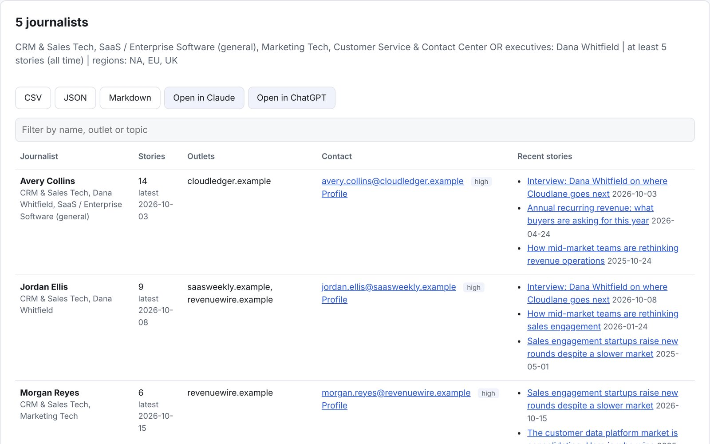

Projects & tools
Tools I built to make the work faster.
I build with AI the way I lead teams: start with a real problem, ship something useful, and keep people in the loop. These are working tools, with the code open on GitHub.
Case study
MediaScout: a journalist finder for SaaS PR
Name a software category or a public executive, and MediaScout returns every reporter and blogger who has published at least five stories on it across 214 outlets in North America, the EU, and the UK, with their published contact details.

The problem
Building a targeted media list is slow, manual work. Paid databases cost thousands a year and go stale fast. The best signal of who will cover a story is what a reporter has actually written, and that takes hours to piece together by hand.
What it does
- Scans outlet sitemaps and feeds, plus the GDELT and NewsAPI news indexes, for stories on a SaaS category, a keyword, or a named executive.
- Reads each byline and counts matching stories per journalist across outlets. Five or more makes the list.
- Pulls published contact details from author pages, each labeled by source and confidence.
- Exports to CSV, JSON, or Markdown, sends the list by email, or hands it to Claude or ChatGPT with an outreach prompt ready to go.
How it is built
- Python, FastAPI, and SQLite, with a polite crawler that follows each site's robots.txt and rate limits.
- An MCP server, so Claude and ChatGPT can run scans and read media lists right inside a chat.
- An opt-out list that removes anyone from every result and export, built with GDPR in mind.
- A demo mode on fictional data, so anyone can try it without touching a real inbox.
- Designed and directed by me, built with Claude Code, and covered by 30 automated tests.
Why it matters
Good PR targeting is a data problem dressed up as a relationships problem. MediaScout does the research, so the team can spend its time on the part that wins coverage: the pitch.